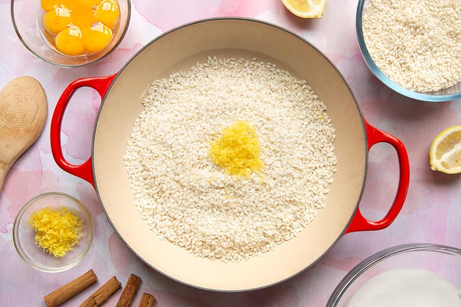

PREPARACION..

Poner el arroz y la corteza de limón en una sartén grande.
Cubrir con el agua hirviendo.
Llevar hasta ebullición, luego cubrir y cocer a fuego lento durante 10 minutos.
Colar el exceso de líquido a través de un tamiz, luego devolver el arroz a la sartén y añadir la leche.
Calentar en medio-bajo hasta burbujear, luego remover en el azúcar y la sal.
Llevar casi hasta ebullición, luego reducir a fuego lento y cocinar sin la tapa esta vez, removiendo muy regularmente durante unos 10 minutos Batir las yemas de huevo con unas cucharadas de arroz para que no revuelto.
Revuelva los huevos en la olla.
Ahora es un juego de paciencia, seguir calentando y se espesará - recuerde agitar bien de vez en cuando para que no se queme. Después de 30-40 minutos, tendrás un encantador arroz con leche espeso y cremoso
Cuando creas que es lo suficientemente grueso, recoge un poco en tu cuchara y déjalo caer. Si mantiene brevemente su forma antes de quitarse la cuchara, ¡es lo suficientemente gruesa y se espesará más a medida que se enfríe!
Cudle su pudín en un plato grande y déjelo para establecer durante unos minutos
Usando un pulgar y un índice pellizcados, espolvoree cuidadosamente en su patrón de canela de raya cruzada, o cualquier diseño que le apetezca.
Una vez enfriado por completo, el pudín se habrá reafirmado lo suficiente como para servir con la cucharada.